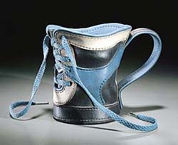
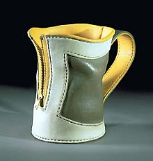

| Marilyn Levine
American trompe-l'oeil sculptor
Canadian
ceramist Marilyn
Levine studied sculpture in Canada and the USA. Levine has
become well known for her hyper-realistic renderings of leather
briefcases, handbags, jackets and the like, in the trompe-l'oeil
tradition.
Other artists have also worked in this tradition, e.g. Ah Leon
and Richard Shaw, but Levine devoted her efforts with great effect
to the rendering of a single material - leather.

Levine uses a stoneware body to which she adds 1 1/5 - 2% chopped
nylon fiber, a process she developed in 1969. She builds the pieces
much like you would build a real suitcase, bag, or whatever. However,
clay being much heavier than leather, or canvas, needs to be supported
with an interior armature, in anything larger than a small handbag.
Levine's gets her surface colors from colored engobes she rolls
onto f the slab prior to the basic construction.
Levine taught at the University of Regina, in Canada from 1966-73,
the University of Utah, Salt Lake City, from 1973-76 and at the
University of California, Berkeley, from 1976-80.
Photos by Richard Sargent &
courtesy M. Levine. © 1999-2003
Marilyn Levine
More Articles
More Artists of the Week
|